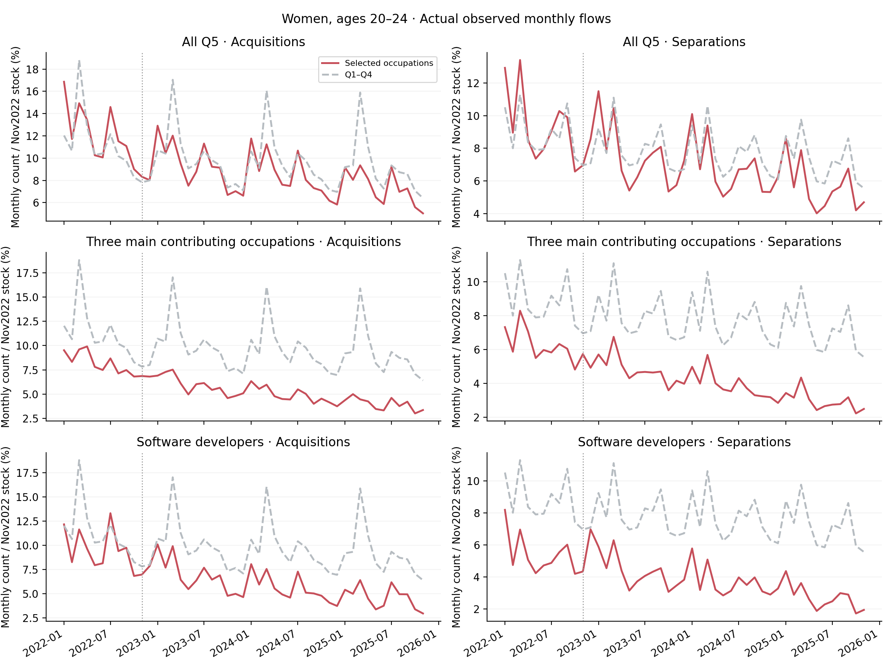
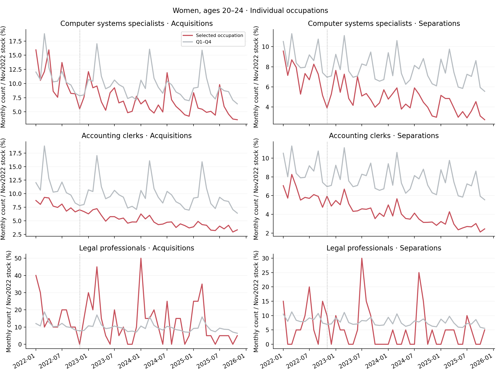
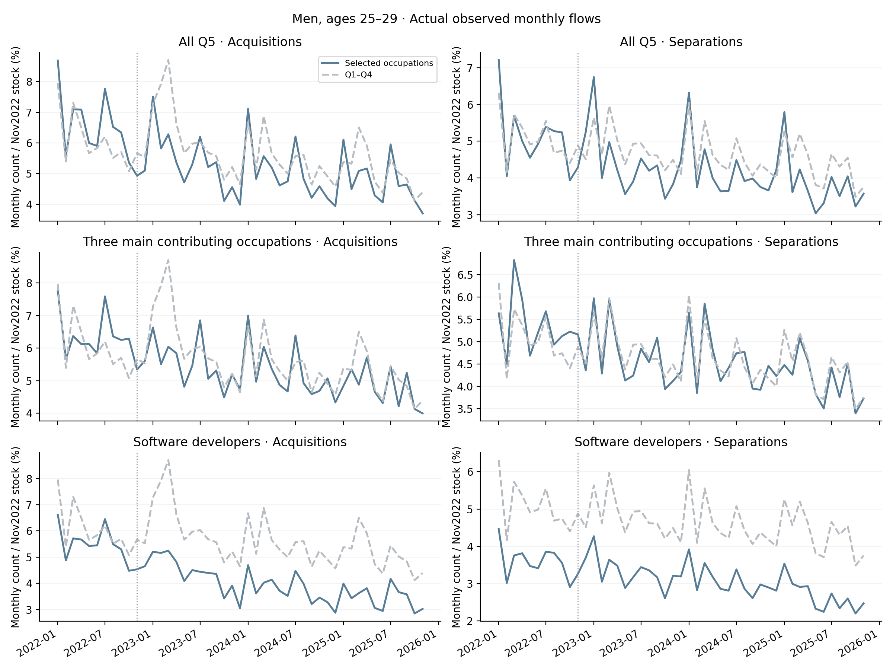
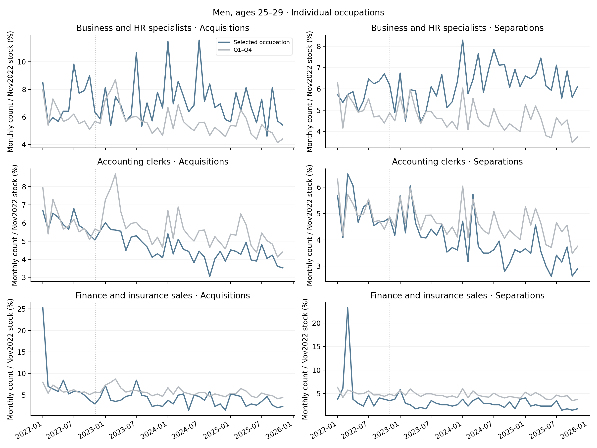
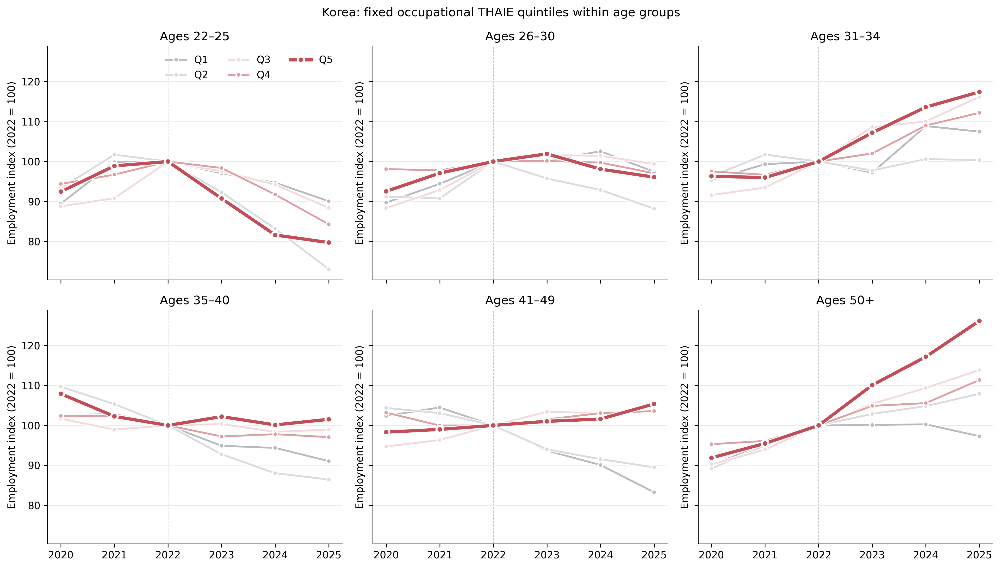

고용지수는 실제 2022년 11월 관측값을 100으로 두고 2022년 1월부터 표시합니다. 11월 관측값이 없는 반기·연간 조사 그래프는 미표시합니다.
KOREA · AI EXPOSURE AND EMPLOYMENT
AI 노출도와 한국 청년층의 고용 변화
직종·연령·성별 월별 고용과 보험 자격 취득·상실을 연결해, 상대적 고용 부진의 분포와 흐름을 검토합니다.
Introduction
AI 관련 기술적 가능성이 높은 분야에서 청년층의 고용 경로가 달라지는가? 변화가 있다면 연령·성별·직종에 어떻게 분포하며, 자격 취득의 약화와 상실의 확대 중 어느 흐름과 일치하는가? 이 연구는 한국의 월별 공개 고용행정자료에 고정 THAIE 분류를 연결해 이 질문을 검토합니다.
본 연구는 한국의 공개 고용행정 교차표를 고정 THAIE 분류와 보수적으로 연결한 재현 가능한 탐색 분석을 제공합니다. 같은 직종 표본의 연령·성별 상대변화, 직종별 결과의 집중도, 보험 자격 취득·상실을 함께 제시하며 연결되지 않은 범위와 식별되지 않은 경로를 명시합니다. 국제 문헌에서 이미 연구한 고용·유입 문제를 한국의 다른 제도·측정 범위에서 점검하는 기여입니다. 연령은 경력과 같지 않으며 실제 AI 도입의 인과효과를 식별한 것은 아닙니다.
분석은 사후 탐색을 포함합니다. 결과에 따라 유의한 집단만 선택해 일반화하지 않도록 비유의 결과, 다중검정 보정, 명세별 민감도를 함께 공개합니다. 전국 전체 청년 고용이나 모든 사업체를 대표하는 결론은 아닙니다.
Data and methods
1. 수집 자료와 실제 분석 입력
| 자료 | 수집 범위 | 집계 단위 | 항목 | 분석에서의 역할 |
|---|---|---|---|---|
| 월별 고용행정통계 | 2019.11–2026.10 · 84개월 · 정규화 290,578행 | 직종 현행화 명칭×원자료 연령×성별×마감월 | 월말 피보험자, 월 취득, 월 상실 | 주 분석의 원천. 전체 산업 기준. 165개 관측 명칭은 기간별로 바뀌며 모두 일반 직종을 뜻하지 않음 |
| 고정 THAIE·공식 직종 대응 | 기존 2025년 모델 기준 점수와 2019–2021년 전국 고용 가중 분위 | 한국 직업 점수→KECO 명칭의 공식 대응 | THAIE, Q1–Q5, 대응 대상·모호성 상태 | 단일 분위 대응 110개 후보 중 공통 주 표본 105개. 연령·성별로 분위 재계산 안 함 |
| 지역별고용조사 B형 | 2020–2025년 4월·10월 · 12회 | 개인 관측을 직업·산업·연령·성별로 가중 집계 | 취업상태, 표본가중치, 직업, 산업, 연령, 성별 | 이전 보조 분석. 월별 행정 DID·취득상실 분석에는 투입하지 않음 |
| 경제활동인구조사 연간자료2 | 2020–2025년 매월 · 72개월 | 개인 관측을 월·연령·성별로 가중 집계 | 취업상태, 가중치, 연령, 성별, 대분류 직업·산업 | 전국 전체 취업자 배경 비교. 월별 직종 세분류 Q5 DID의 입력이 아님 |
| 산업 62 교차자료·승인자료 | 일부 별도 표 수집, 4항목 동시 교차는 미확보 | 산업×직종×연령×성별의 일관된 월별 결합표 없음 | 개인·사업장 연결키, 정확한 만연령·계약상 시간형태 미확보 | 미확보 항목으로 통제했다고 주장하지 않음. 자료 신청 발송은 승인·수령이 아님 |
공개 XLSX 원표를 별도로 보존했습니다. 추가 수집 25개월의 세부행 합계는 피보험자·취득·상실 각각 공식 총계와 일치했습니다. 기존 검증본과 연결해 84개월을 확보했으며 2024년 12월은 별도 재조회 원표로 복원했습니다. 원표의 직종·연령 병합 표제만 같은 계층에서 복원하고 총계·소계를 세부행과 중복 합산하지 않았습니다. 이는 수집·산술 검증이며 역사적 분류 의미의 불변성을 보장하지 않습니다.
2. 변수와 표본 구성
| 필드 | 정의 | 분석 용도 | 해석 범위 |
|---|---|---|---|
| occupation | 직종 현행화 명칭 | 분류 전달과 직종 고정효과 | 취득 신고 시 근무직종. 실제 세부 과업이나 매월 직무 이동이 아님 |
| age / sex | 원자료 5세 구간·성별 코드 | 20–24세·25–29세, 남·여 층화 | 해당월 말 연령. 같은 사람의 추적 패널이 아님 |
| time / rel / post | 마감월·2022.11 대비 상대월·사후 여부 | 기간 선택과 월 고정효과 | 2022.11 전환월은 회귀에서 제외 |
| stock / n | 월말 피보험자 수 | 로그 고용·고용지수·흐름 기준분모 | 전체 취업자·인구 대비 고용률과 다름 |
| acquisitions | 월 보험 자격 취득자 수 | 취득 흐름 DID | 재취득·직장 이동 등을 분리하지 못해 순신규채용과 다름 |
| separations | 월 보험 자격 상실자 수 | 상실 흐름 DID | 자발적 퇴사·해고·계약종료 사유를 분리하지 않음 |
| quintile / q5 | 고정 THAIE 분위·Q5 표시 | Q5 대 Q1–Q4 비교 | 실제 기업 AI 도입 여부나 당해 모델 성능 변화 아님 |
| base / weight | 고정 기준월 인원 | 흐름 100명당 정규화·규모 가중 민감도 | 흐름은 2022.11, 기존 고용 DID 규모 가중은 2022.10 |
| residual | Δ월말 인원−취득+상실 | 재고·흐름 정합성 점검 | 연령·직종 이동, 정정 등 미분리 항목. 원인을 확정하지 않음 |
주 표본은 2022년 11월을 포함한 73개월에 두 연령·남녀 모두 관측되고 피보험자 수가 양수인 같은 105개 직종입니다. Q1 17개·Q2 23개·Q3 30개·Q4 15개·Q5 20개입니다. 분위별 직종 수가 같도록 재분할하지 않았습니다. 기존 분류를 보수적으로 전달한 뒤 모호한 대응과 불완전 관측을 제외한 결과입니다. 110개 단일 분위 대응 후보 중 주 표본은 105개이며, 전국 전체 직종이나 청년 고용 전부를 대표하지 않습니다.
2022년 11월 기준 관측 명칭 전체를 분모로 한 점수 연결 비중은 20–24세 남성 약 60.0%·여성 48.6%, 25–29세 남성 63.1%·여성 52.6%입니다. 범위 제한과 성별 커버리지 차이를 함께 해석해야 합니다. 월별 시각화의 포함 기준은 별도로 2022.01–2026.10의 남녀 공통 직종·양수 기준월입니다. 회귀의 73개월 기준과 혼동하지 않습니다.
실제 0은 흐름 분석에서 유지하고, 없는 조합을 0으로 생성하거나 보간하지 않았습니다. 직종×연령×성별×월 키 중복을 검사했습니다. 원표의 현행화 직종 명칭을 2025년 공식 대응자료와 연결했지만 공식 웹 설명에는 2018년 버전이 남아 있어 역사적 소급 분류 범위는 추가 확인 사항입니다.
3. THAIE와 고정 분위
기존 과업 평가 점수는 LLM 활용으로 같은 품질의 결과를 유지하며 인간 수행시간을 절반 이상 줄일 수 있는지에 대한 분류를 수치화한 값입니다. THAIE는 기존 과업 평가 점수에 인간 예상 수행시간에 대응하는 모델 완료 계수를 반영하고 직업별로 집계한 지표입니다. 난이도는 예상 수행시간으로 나타냅니다. 완료 계수는 실제 직장 과업의 성공확률로 검증된 값이 아닙니다. 모델 기준과 Q1–Q5는 시간·연령·성별에 고정했고 실제 기업의 AI 사용을 측정하지 않았습니다. 원 측정 방법론을 별도로 제시합니다.
4. 대칭 기간 DID와 이벤트 스터디
84개월 중 사전 2019.11–2022.10과 사후 2022.12–2025.11을 각각 36개월로 맞췄습니다. 2022.11은 전환월로 제외하고 주 회귀에는 72개월을 사용했습니다. 연령·성별 각각 105×72=7,560개 직종·월 관측입니다.
기본 추정은 직종 동일가중이며 β를 100[exp(β)−1]의 상대적 변화율로 표시합니다. 직종·월 고정효과, 직종 군집 표준오차, 104 자유도 양측 t검정을 적용했습니다. 규모 가중, Q5 차등 선형추세, 차등 코로나기간 효과와 두 방향 군집을 민감도로 구분했습니다. 차등 추세는 사후 자료도 사용하므로 참된 반사실로 간주하지 않습니다.
이 추론은 직종별 군집과 명세 가정에 조건부입니다. Q5 직종은 20개이며 유한표본 민감도를 완전히 검증한 것은 아닙니다. 같은 직종군의 공통 충격이 남으면 직종 간 오차 독립성이 깨질 수 있습니다. 월 고정효과와 기존 두 방향 군집 점검만으로 산업별 공통 충격이 모두 제거됐다고 보지 않습니다.
이벤트 스터디는 6개월 구간이며 기준은 2022년 5–10월입니다. 사전 5개 계수 공동 F검정과 사전만 사용한 차등 선형추세를 확인했습니다. 이벤트 기준인 직전 6개월과 평균 DID 기준인 사전 36개월은 다릅니다. 남녀 차이는 직종 내 로그 여성/남성 고용비에 같은 DID를 적용해 직접 검정했습니다. 한 집단의 유의·다른 집단의 비유의만으로 차이를 주장하지 않습니다.
5. 취득·상실과 재고·흐름
A는 취득, S는 상실입니다. 실제 0이 있어 흐름을 로그로 변환하지 않았습니다. 고정 기준월 인원 100명당 월 건수에 같은 DID를 적용해 당월 고용 감소의 분모 효과를 피했습니다. 순취득은 A*−S*로 가산적입니다. 두 집단 Q5의 취득·상실 4검정을 함께 Holm 보정했습니다. 규모 가중·추세·코로나·차등 월별 계절성을 추가로 점검했습니다.
이 정규화는 기준월 인원으로 규모를 표준화한 월 집계값입니다. 개인의 입직·이직 확률이나 현재 위험집단에 대한 취득·상실 위험률이 아닙니다. 20–24세 여성 Q5 직종의 기준월 인원은 20–29,710명으로 차이가 크며 법률 전문가는 20명입니다. 25–29세 남성은 120–40,884명입니다. 작은 기준분모와 동일직종 가중의 영향을 규모 가중 민감도와 함께 해석합니다.
R은 관측 인원 변화와 취득−상실의 잔차입니다. 첫 사전월은 전월 인원이 없어 정합성 회귀에서만 제외하므로 해당 표는 사전 35개월·사후 36개월입니다. 연령집단 이동·직종 이동·정정·집계 차이를 분리하지 못하며 잔차를 모두 연령 이동으로 보지 않습니다. 월말 인원의 기간 합계를 고유 근로자 수로 해석하지 않습니다.
6. 직종 기여·제외·다중검정
균형 표본의 기본 DID 로그계수를 직종별 사후−사전 평균 로그 변화로 정확히 분해했습니다. Q5 직종별 기여 합이 원 계수와 일치하는지 검사하고 모든 105개 직종의 단일 제외 및 상위 기여 직종 제외를 재추정했습니다. 기여율은 인원 비중이나 인과 기여가 아닙니다.
연령·성별 기본 고용 DID 4검정, 연령별 남녀 직접 대비 2검정, 사후 이벤트 24검정, 선택한 두 집단의 취득·상실 4검정은 각 가족 안에서 Holm 보정했습니다. 전체 연구의 모든 탐색과 선택을 포괄하는 보정은 아닙니다. 흐름의 두 집단과 주요 직종은 앞선 고용 결과에서 선택했으므로 추가 탐색 편향이 남습니다. 처리 직종이 1–3개인 개별·소규모 직종군은 확증적 군집 p값·신뢰구간을 제시하지 않습니다. Roth (2022)에 따라 사전 검정 비유의를 평행추세의 증명으로 사용하지 않습니다.
수치 검증은 원 더미 회귀와 별도의 균형 패널 계산을 대조했고, 기여의 합·재고 흐름 항등식과 입력 해시를 확인했습니다. 자료 목록과 변수 사전을 제공합니다.
기여의 합과 잔차를 포함한 회귀계수 가산성은 계산적 검산입니다. 특히 R=ΔN−A+S로 잔차를 정의했으므로 ΔN=A−S+R의 성립은 대수적 항등식이며, 취득·상실이 관측 인원 변화를 완전히 설명하거나 원자료가 경제적으로 일치함을 독립적으로 검증한 것은 아닙니다. 원표 총계 대조와 이 계산 검산은 다른 검증입니다.
전문 리뷰 후 선택한 두 집단에 한정된 흐름 분석을 점검하기 위해 네 연령·성별 집단의 취득·상실 8검정을 추가했습니다. 동일 표본·정규화·회귀 명세로 계산했고 8검정 Holm p값을 별도로 제시했습니다. 원래 4검정 표와 계수는 변경하지 않았습니다. 전체 집단 보완 표를 함께 확인할 수 있습니다.
7. 와일드 클러스터 부트스트랩
세 핵심 대비에 귀무가설 부과 WCR11을 직접 구현하고 Rademacher·Webb 가중 각각 99,999회를 실시했습니다. 각 반복에 고정효과를 재투영하고 재추정한 t통계량을 비교했습니다. 105직종·31 KECO 중분류를 구분하고 세 대비 안의 Holm 보정을 별도로 제시했습니다. full-dummy 회귀 6개의 부트스트랩 계수·표준오차와 두 방향 군집 분산을 대조했습니다. 이것은 계산 구현 검증이며 군집 독립이나 인과 가정의 검증이 아닙니다. 부트스트랩 방법 문서를 참고했습니다.
Results
주 비교, 취득·상실, 직종 영향력을 순서대로 제시합니다. 모든 기본 검정과 비유의 결과를 함께 보존하고 기술통계 갤러리는 별도로 구분했습니다.
핵심 결과 요약 · 고용 규모, 남녀 차이와 유입·유출을 구분합니다
직종별 군집 가정에서는 취득 약화와 남녀 차이가 관측되지만, 더 넓은 직종군 공통 충격을 허용하면 유의성이 약해집니다. 고용 감소 자체는 명세와 다중검정에 민감하며, 특정 직종이나 AI만의 인과효과로 단정할 수 없습니다.
흐름 분석은 앞선 고용 결과에서 두 집단을 선택한 사후 분석으로 시작했습니다. 심사 후 네 연령·성별 집단을 모두 추가 점검하고 8검정 보정도 제시했지만, 전체 연구의 선택·기간·명세 탐색을 보정한 결과는 아닙니다.
| 질문 | 관찰 | 추론의 범위 |
|---|---|---|
| 고용 감소가 두 집단에서 유의한가? | 20–24세 여성 −9.90%, 25–29세 남성 −9.10%. 원 p는 약 0.04–0.05 | 네 연령·성별 보정 후 모두 비유의. 여성 추세 조정·남성 규모 가중에서 비유의 |
| 25–29세 남녀 차이가 있는가? | 여성 상대변화가 남성보다 13.05% 높음. 두 대비 Holm p=0.0123 | 직종별 WCR에서 유지. 중분류 WCR 원 p=0.1367로 비유의. 연령 간 격차 차이도 강건하지 않음 |
| 어떤 흐름과 일치하는가? | 취득 DID 여성 −1.843·남성 −1.067. 네 집단 8검정 Holm p=0.0372·0.0339 | 중분류 WCR에서 남성 원 p=0.1018, 여성 3검정 보정 p=0.0673. 공통 충격 구조에 민감 |
| 특정 직종 하나가 설명하는가? | 소프트웨어 제외 시 기본 감소는 더 커짐 | 주요 기여 1위 제외 시 두 집단 원 p≥0.05. 유의성은 직종 구성에 민감 |
핵심 결과는 전체 표본의 비유의 결과와 함께 해석합니다. 아래 상세 카드에는 표본, 신뢰구간, 사전 추세와 보정 범위를 제공합니다. 분석은 사전등록된 확증 연구가 아닙니다.
핵심 추론 점검 · 직종별 부트스트랩에서는 유지되지만 직종군 공통 충격에 민감합니다
세 핵심 대비 모두 직종별 와일드 클러스터 부트스트랩에서는 유의했지만, 더 넓은 직종군의 상관을 허용하면 판단이 달라졌습니다. 기존 계수는 그대로 두고 불확실성을 다시 평가했습니다. 귀무가설 β=0을 부과한 WCR11 부트스트랩을 각 변형별 99,999회 실시하고, 매 반복 고정효과 재투영과 studentized 양측 검정을 적용했습니다.
| 대비 | 105직종 WCR | 105직종 3검정 Holm | 31중분류 WCR | 31중분류 3검정 Holm |
|---|---|---|---|---|
| 20–24세 여성 취득 | 0.0058 | 0.0130 | 0.0224 | 0.0673 |
| 25–29세 남성 취득 | 0.0043 | 0.0130 | 0.1018 | 0.2036 |
| 25–29세 남녀 고용 대비 | 0.0077 | 0.0130 | 0.1367 | 0.2036 |
취득 추정치는 여성 −1.843·남성 −1.067로 기준월 고용 100명당 월 취득 집계값의 상대적 차이이며, 남녀 고용 대비는 여성의 상대변화가 남성보다 13.05% 높은 기존 값입니다. 직종별 군집에서는 세 대비 보정 후에도 p≈0.013입니다. 중분류별 군집에서는 여성 취득은 원 p=0.0224이나 보정 p=0.0673이고, 남성 취득·남녀 고용 대비는 원 p값도 비유의입니다.
Webb 6점 가중에서도 같은 판단입니다. 중분류별 원 p는 여성 취득 0.0207·남성 취득 0.0994·남녀 고용 대비 0.1242입니다. 이번 Holm 보정은 요청한 세 대비 안에서만 적용했으며, 앞선 8개 흐름 검정이나 전체 연구의 사후 선택·명세 탐색을 포괄하지 않습니다.
공통 충격에 대한 추가 점검
공식 KECO 코드 앞 두 자리의 31개 직종군으로 묶어 같은 군집 안 직종들의 동시·시차 상관을 허용했습니다. 산업 분류가 아니며 Q5가 포함된 군집은 7개뿐입니다. 군집 독립성과 적은 처리 군집의 한계가 있어 이 검정도 모든 문제를 해결하지는 않습니다.
기본 잔차의 평균 상관은 같은 중분류 안에서 여성 취득 0.175·남성 취득 0.308·남녀 고용비 0.097이고, 중분류 간에는 각각 0.046·0.083·0.010입니다. 이는 기술적 동행성 진단이며 공통 충격의 원인을 식별한 검정은 아닙니다.
직종·월 두 방향 군집의 원 p는 각각 0.0103·0.0047·0.0064로 유의했습니다. 이는 동월의 직종 간 상관을 허용한 점근적 추론이며, 중분류 와일드 부트스트랩과 같은 검정이 아닙니다. 월별 격차의 HAC 점검도 별도 결과로 제공합니다. 유의한 변형만 골라 중분류 검정의 비유의를 무시하지 않습니다.
중분류×월 고정효과를 넣으면 대부분의 Q5 변화가 흡수되고 2개 혼합 중분류의 10개 직종·Q5 3개만 식별에 남았습니다. 따라서 추정대상이 달라지는 진단으로만 보존하고 확증적 p값을 제시하지 않았습니다.
적절한 결론은 직종별 군집 가정에 조건부인 관찰이며, 더 넓은 공통 충격 구조에서도 강건하게 유지된다는 주장은 아닙니다. 비유의는 효과 부재의 입증이 아닙니다. 산업 수요·인구·가입 변화와 실제 AI 도입을 분리하지 못해 인과해석의 한계는 유지됩니다.
핵심 결과 1 · 연령·성별 차이는 명세와 다중검정에 따라 다릅니다
25–29세에서는 남성의 상대적 변화가 여성보다 낮았고, 20–24세에서는 여성의 감소가 관측됐지만 명세에 민감했습니다. 두 결과를 하나의 성별 피해 패턴으로 묶지 않습니다.
25–29세 남녀 대비의 유의성은 직종별 부트스트랩에서는 유지되지만 중분류별 부트스트랩에서는 유지되지 않았습니다. 공통 충격 민감도를 함께 확인합니다.
앞선 통합 분석과 같은 105개 직종(Q5 20개, Q1–Q4 85개)을 유지했습니다. 사전 2019년 11월–2022년 10월과 사후 2022년 12월–2025년 11월 각 36개월이며, 전환월은 제외했습니다. 연령·성별 각각 7,560개 직종·월 관측입니다. 로그 피보험자 수에 직종·월 고정효과와 직종 군집 표준오차를 적용하고 104 자유도 양측 검정을 사용했습니다. 결측 대체·보간은 없습니다.
| 연령 | 성별 | Q5 상대적 변화 | 95% 신뢰구간 | 양측 p | 4검정 Holm p |
|---|---|---|---|---|---|
| 20–24세 | 남성 | −4.14% | −19.81% ~ +14.60% | 0.6397 | 1.0000 |
| 20–24세 | 여성 | −9.90% | −18.48% ~ −0.41% | 0.0415 | 0.1662 |
| 25–29세 | 남성 | −9.10% | −17.28% ~ −0.10% | 0.0477 | 0.1662 |
| 25–29세 | 여성 | +2.76% | −8.18% ~ +15.01% | 0.6319 | 1.0000 |
20–24세 여성과 25–29세 남성은 원 p값에서만 5% 수준으로 유의하며, 네 연령·성별 검정을 함께 Holm 보정하면 모두 비유의입니다. 기본 DID는 전체 사전 36개월과 사후 36개월의 상대적 변화를 비교하며, Q5 자체의 절대 감소율이 아닙니다.

마지막 사후 구간인 2025년 6–11월의 상대적 변화는 20–24세 여성 −19.49%(원 p=0.0032, 사후 24검정 Holm p=0.0544), 25–29세 남성 −14.86%(원 p=0.0009, Holm p=0.0208)입니다. 같은 구간의 20–24세 남성과 25–29세 여성은 비유의입니다. 이 이벤트 비교는 직전 6개월이 기준이므로 평균 DID의 유의성과 구분합니다.
| 연령 | 성별 | 사전 계수 공동검정 p | 사전 선형추세 p |
|---|---|---|---|
| 20–24세 | 남성 | 0.4053 | 0.5679 |
| 20–24세 | 여성 | 0.1514 | 0.3334 |
| 25–29세 | 남성 | 0.6300 | 0.4879 |
| 25–29세 | 여성 | 0.5914 | 0.1658 |
네 집단 모두 사전 추세 차이를 검출하지 못했습니다. 비유의는 평행추세의 입증이 아니며, 먼 사전 구간의 넓은 신뢰구간과 검정력에 유의해야 합니다.
| 연령 | 성별 | 기본 | 규모 가중 | 차등 선형추세 | 코로나 조정 |
|---|---|---|---|---|---|
| 20–24세 | 남성 | −4.14% (p=0.6397) | −19.60% (p=0.0022) | −4.43% (p=0.1794) | −6.09% (p=0.4637) |
| 20–24세 | 여성 | −9.90% (p=0.0415) | −18.89% (p=0.0020) | −4.87% (p=0.2041) | −10.35% (p=0.0210) |
| 25–29세 | 남성 | −9.10% (p=0.0477) | −6.60% (p=0.3647) | −5.67% (p=0.0198) | −8.94% (p=0.0284) |
| 25–29세 | 여성 | +2.76% (p=0.6319) | +1.47% (p=0.8302) | −0.47% (p=0.8369) | +1.80% (p=0.7214) |
20–24세 여성 감소는 차등 선형추세 조정에서 유의하지 않고, 25–29세 남성 감소는 고용규모 가중에서 유의하지 않습니다. 20–24세 남성은 규모 가중에서만 유의합니다. 가중 여부는 추정대상을 바꾸며, 사후 자료까지 쓰는 차등 선형추세도 결정적 보정이 아닙니다. 민감도 표의 p값은 다중검정 미보정 값이며 유의한 명세만 선택하지 않습니다.
| 연령 | 여성/남성의 상대적 변화 차이 | 95% 신뢰구간 | 원 p | 2검정 Holm p |
|---|---|---|---|---|
| 20–24세 | −6.01% | −20.49% ~ +11.12% | 0.4647 | 0.4647 |
| 25–29세 | +13.05% | +3.63% ~ +23.32% | 0.0062 | 0.0123 |
25–29세의 남녀 차이는 두 연령의 직접 대비를 Holm 보정한 후에도 유의합니다(p=0.0123). 공통 고용규모 가중(p=0.0261), 선형추세(p=0.0053), 코로나 조정(p=0.0052)에서도 여성의 상대적 변화가 더 높았습니다. 이는 상대변화의 비율이며 13.05퍼센트포인트 차이나 여성 고용 자체의 증가가 아닙니다. 20–24세의 기본 남녀 차이는 비유의이고, 공통 규모 가중에서 방향과 유의성이 달라져 안정적인 성별 차이라고 보기 어렵습니다.
남녀 격차 자체가 연령층 사이에서 다르다는 직접 검정은 기본 명세 p=0.0423이지만, 선형추세 p=0.1706·코로나 조정 p=0.0650으로 비유의입니다. 따라서 남녀 차이가 25–29세에만 존재한다고 단정하지 않습니다. 추가 대비와 민감도는 탐색적이며 전체 탐색을 포괄하는 다중검정 보정은 아닙니다.
피보험자 수는 인구 조정 고용률·신규 채용·전일제 고용이 아닙니다. 산업 수요·코로나 회복·연령집단 이동과 인구 변화, 역사적 직종 재분류를 완전히 통제하지 못했습니다. 고정 THAIE와 완전관측·양수 선택표본을 사용했고 실제 AI 도입을 관측하지 않았습니다. AI의 인과효과로 해석하지 않습니다.
핵심 결과 2 · 상대적 순유입 약화는 상실 증가보다 취득 감소와 일치합니다
20–24세 여성과 25–29세 남성의 Q5 모두 취득 감소가 관측됐고 상실 증가는 관측되지 않았습니다. 상실도 감소 방향이어서 순취득 감소를 일부 상쇄합니다. 두 집단의 기본 취득 감소는 네 흐름 검정 보정 후에도 유의했습니다.
후속 와일드 부트스트랩에서 직종별 군집 결과는 유지됐지만, 중분류 공통 충격을 허용하면 유의성이 약해졌습니다. 아래 기존 p값은 해당 직종별 군집·명세의 결과입니다. 새 추론 점검을 함께 확인해야 합니다.
심사 후 보완 · 네 연령·성별 집단의 흐름을 같은 조건에서 점검했습니다
앞선 고용 결과로 선택한 두 집단만 분석한 범위를 넓혀, 20–24세·25–29세의 남녀 모두에 같은 기본 흐름 DID를 적용했습니다. 아래 8검정을 함께 Holm 보정했습니다. 이 추가 점검 역시 사전등록된 분석이 아니며 연구 전체의 선택과 탐색을 보정하지는 않습니다.
| 연령 | 성별 | 흐름 | DID | 원 p | 8검정 Holm p |
|---|---|---|---|---|---|
| 20–24세 | 남성 | 취득 | -1.307 | 0.3037 | 1.0000 |
| 20–24세 | 남성 | 상실 | -0.768 | 0.2838 | 1.0000 |
| 20–24세 | 여성 | 취득 | -1.843 | 0.0053 | 0.0372 |
| 20–24세 | 여성 | 상실 | -0.616 | 0.2675 | 1.0000 |
| 25–29세 | 남성 | 취득 | -1.067 | 0.0042 | 0.0339 |
| 25–29세 | 남성 | 상실 | -0.458 | 0.0809 | 0.4043 |
| 25–29세 | 여성 | 취득 | -0.681 | 0.0365 | 0.2189 |
| 25–29세 | 여성 | 상실 | -0.118 | 0.6658 | 1.0000 |
취득 감소는 20–24세 여성과 25–29세 남성에서 이 범위의 보정 후에도 유의했습니다. 25–29세 여성의 취득 감소는 원 p=0.0365이나 보정 p=0.2189이고, 20–24세 남성은 원 p=0.3037입니다. 어느 집단에서도 기본 상실 증가가 관측되지 않았습니다. 다음 표의 기존 선택집단 4검정 보정과 이 8검정 보정은 서로 다른 검정 가족입니다.
| 집단 | 흐름 | DID | 95% 신뢰구간 | 원 양측 p | 4검정 Holm p |
|---|---|---|---|---|---|
| 20–24세 여성 | 취득 | -1.843 | -3.127 ~ -0.560 | 0.0053 | 0.0170 |
| 20–24세 여성 | 상실 | -0.616 | -1.713 ~ +0.480 | 0.2675 | 0.2675 |
| 20–24세 여성 | 순취득 | -1.227 | -1.958 ~ -0.496 | 0.0012 | 별도 미보정 |
| 25–29세 남성 | 취득 | -1.067 | -1.790 ~ -0.343 | 0.0042 | 0.0170 |
| 25–29세 남성 | 상실 | -0.458 | -0.973 ~ +0.057 | 0.0809 | 0.1617 |
| 25–29세 남성 | 순취득 | -0.609 | -1.026 ~ -0.191 | 0.0047 | 별도 미보정 |
취득 감소는 규모 가중·차등 추세·코로나 명세에서 원 p<0.05로 유지됐습니다. 사전·사후에 각 달이 3회씩 들어가므로 추가 계절성 상호작용을 넣어도 기본 DID 점추정치가 같은 것은 설계상 예상됩니다. 이를 별도의 독립적인 강건성 증거로 세지 않습니다. 순취득은 25–29세 남성의 차등 추세 명세에서 p=0.0569로 비유의입니다. 민감도 전체를 보정한 것은 아닙니다. 사전 계수 공동검정은 여성 취득 p=0.8117·상실 p=0.4830, 남성 취득 p=0.8149·상실 p=0.3152로 차이를 검출하지 못했으며 평행추세를 입증하지는 않습니다.
20–24세 여성의 실제 월별 흐름

20–24세 여성 주요 직종 각각의 월별 경로

25–29세 남성의 실제 월별 흐름

25–29세 남성 주요 직종 각각의 월별 경로

| 집단 | 직종 | 취득 DID | 상실 DID | 순취득 DID |
|---|---|---|---|---|
| 20–24세 여성 | 컴퓨터시스템 전문가 | -3.116 | -3.419 | +0.303 |
| 20–24세 여성 | 회계·경리 사무원 | -1.993 | -0.874 | -1.119 |
| 20–24세 여성 | 법률 전문가 | -2.498 | -2.139 | -0.359 |
| 20–24세 여성 | 소프트웨어 개발자 | -1.293 | +0.964 | -2.257 |
| 25–29세 남성 | 경영·인사 전문가 | +0.367 | -0.188 | +0.555 |
| 25–29세 남성 | 회계·경리 사무원 | -1.596 | -1.154 | -0.441 |
| 25–29세 남성 | 금융·보험 영업원 | -3.463 | -1.748 | -1.715 |
| 25–29세 남성 | 소프트웨어 개발자 | -1.008 | +0.239 | -1.248 |
소프트웨어 개발자는 두 집단 모두 취득 감소와 상실 증가 방향이 함께 나타납니다. 그러나 여성 컴퓨터시스템과 남성 경영·인사는 순취득 DID가 양수입니다. 개별 직종의 고용 재고 상대변화를 모두 취득 감소로 설명하지 않습니다. 한 직종 및 주요 3개 직종군의 군집 추론은 처리 직종 수가 적어 억제했으며, 집단 전체 Q5와 같은 수준의 통계적 증거로 취급하지 않습니다.
재고·흐름 잔차를 남겨 두었습니다
| 집단 | Δ월말 인원 DID | 순취득 DID | 잔차 DID |
|---|---|---|---|
| 20–24세 여성 | -1.008 | -1.185 | +0.177 |
| 25–29세 남성 | -0.729 | -0.596 | -0.132 |
월별 원자료의 잔차는 작지 않습니다. 첫 사전월은 전월 인원이 없어 이 정합성 표만 제외했습니다. 연령 이동·직종 이동·정정·보고시점 차이를 분리하지 못하므로 인원 감소를 취득·상실만으로 완전히 설명하거나 잔차를 특정 원인으로 해석하지 않습니다.
취득은 순신규채용, 상실은 해고가 아닙니다. 집단과 주요 직종은 앞선 고용 결과에 따라 선택됐으며 흐름 검정의 Holm 보정도 이 선택을 보정하지 않습니다. 산업 수요·인구·코로나 회복 및 실제 AI 도입을 분리하지 못해 AI가 채용을 줄였다는 인과결론은 불가합니다.
핵심 결과 3 · 직종별 집중도와 제외 민감도
기본 동일직종 가중 로그 DID의 점추정치 분해에서 소프트웨어 개발자는 두 집단의 상대적 감소를 상쇄했습니다. 20–24세 여성은 컴퓨터시스템·회계경리 등이, 25–29세 남성은 경영인사·회계경리 등이 주요 기여 직종입니다. 주요 직종을 제외하면 감소 폭과 기본 명세의 유의성이 약해집니다.
같은 105개 직종과 전후 각 36개월을 유지했습니다. 기본 DID 로그계수는 Q5 직종별 사후−사전 평균 로그 고용 변화에서 Q1–Q4의 평균 변화를 뺀 값의 평균입니다. 각 Q5 직종의 기여는 (해당 직종 로그 변화−대조군 평균 로그 변화)/20으로 계산하며 합이 원 로그계수와 일치합니다. 기여율은 이 로그계수의 분해로, 감소 인원의 비중이나 인과적 기여율이 아닙니다. 양의 기여는 상대적 감소를 상쇄합니다.

| 집단 | 직종 | 기본 DID 로그계수 기여율 | 사후 평균 인원−사전 평균 인원 |
|---|---|---|---|
| 20–24세 여성 | 컴퓨터시스템 전문가 | 23.2% | -915.5명 |
| 20–24세 여성 | 회계·경리 사무원 | 19.0% | -6,580.6명 |
| 20–24세 여성 | 법률 전문가 | 14.0% | -9.2명 |
| 20–24세 여성 | 텔레마케터 | 12.9% | -48.9명 |
| 20–24세 여성 | 안내·고객상담·통계·비서 및 기타 사무원 | 10.0% | -9,173.6명 |
| 25–29세 남성 | 경영·인사 전문가 | 19.9% | -1,159.4명 |
| 25–29세 남성 | 회계·경리 사무원 | 14.0% | -1,319.2명 |
| 25–29세 남성 | 금융·보험 영업원 | 13.4% | -52.9명 |
| 25–29세 남성 | 컴퓨터하드웨어·통신공학 기술자 | 12.5% | -580.0명 |
| 25–29세 남성 | 컴퓨터시스템 전문가 | 11.4% | -882.1명 |
상위 3개 직종의 기여율 합은 20–24세 여성 약 56.2%, 25–29세 남성 약 47.3%입니다. 기본 명세는 동일직종 가중이므로 작은 직종도 큰 직종과 같은 가중치를 받습니다. 예를 들어 여성 20–24세 법률 전문가의 평균 인원 감소는 약 9명으로 작습니다. 실제 인원 감소는 같은 집단의 안내·고객상담 등 사무원 약 9,174명, 회계·경리 약 6,581명이 가장 큽니다. 인원 차이는 사후 36개월 평균−사전 36개월 평균이며 누적 감소인원이 아닙니다.
소프트웨어 자체의 하락과 평균 DID 기여는 다른 비교입니다
소프트웨어 개발자의 2022년 11월→2025년 11월 피보험자 수는 20–24세 여성 7,638명→3,846명(−49.65%), 25–29세 남성 40,884명→34,357명(−15.96%)으로 감소했습니다. 그러나 전체 사전·사후 평균과 대조군을 비교하는 기본 DID에서는 상대적 감소를 상쇄했습니다. 전체 로그계수 대비 signed 기여율은 각각 −1.6%, −6.5%입니다. 기준월 이후의 하락이 평균 DID의 음의 기여를 뜻하지는 않습니다.
특히 25–29세 남성 Q5 전체의 사후 평균 피보험자 수는 사전보다 약 1,290명 많습니다. 이 집단의 DID는 Q5 총인원의 절대 감소가 아니라 직종별 로그 변화의 상대적 부진입니다.
| 제외 조건 | 20–24세 여성 DID | 원 p | 25–29세 남성 DID | 원 p |
|---|---|---|---|---|
| 제외 없음 | -9.90% | 0.0415 | -9.10% | 0.0477 |
| 소프트웨어 개발자 제외 | -10.55% | 0.0329 | -10.14% | 0.0257 |
| IT 4개 직종 제외 | -8.16% | 0.1042 | -9.67% | 0.0406 |
| 각 집단 기여 1위 제외 | -8.08% | 0.0808 | -7.73% | 0.0844 |
| 각 집단 기여 상위 3개 제외 | -5.23% | 0.2378 | -5.74% | 0.1983 |
| 각 집단 기여 상위 5개 제외 | -2.86% | 0.5150 | -3.59% | 0.4175 |
각 집단 기여 1위는 여성의 컴퓨터시스템 전문가, 남성의 경영·인사 전문가입니다. 상위 3개는 여성의 컴퓨터시스템·회계경리·법률 전문가, 남성의 경영인사·회계경리·금융보험 영업원입니다. IT 4개는 소프트웨어 개발자, 컴퓨터시스템 전문가, 네트워크·정보보안 전문가, 컴퓨터하드웨어·통신공학 기술자입니다.
소프트웨어를 제외해도 감소 방향과 기본 원 p값의 유의성은 유지되지만, 기여 1위 직종 하나만 제외하면 두 집단 모두 원 p≥0.05입니다. 상위 3개 제외 시 여성 −5.23%(p=0.2378), 남성 −5.74%(p=0.1983)로 약해집니다. 전체 105개 직종을 하나씩 제외하면 방향은 모두 음수였지만 여성 15회, 남성 45회에서 p≥0.05였습니다. 이 횟수는 확률이나 검정력 추정이 아닙니다.
소프트웨어 제외 후 여성은 차등 선형추세 조정에서 비유의(p=0.2516), 남성은 규모 가중·추세·코로나 명세에서도 원 p<0.05였습니다. 소프트웨어 제외 이벤트 스터디 마지막 구간은 여성 −18.89%(원 p=0.0055), 남성 −14.90%(원 p=0.0012)이며 사전 계수 공동검정은 각각 p=0.2010, p=0.4564입니다. 비유의는 평행추세의 증명이 아닙니다. 전체 제외·명세별 표는 다운로드에 제공합니다.
제외 검정은 탐색적 영향력 진단입니다. 원 결과로 기여 순위를 정한 뒤 제외했고, 남은 직종의 추정대상도 바뀝니다. 표의 p값은 미보정이며 이전 네 연령·성별 기본검정의 Holm 보정 후 비유의 결과를 뒤집는 근거가 아닙니다. 산업 수요·인구·코로나 회복·직종 재분류와 선택표본의 한계가 남아 AI 인과효과로 해석하지 않습니다.
전체 기여·제외 민감도·검증·재현 코드 · 직종별 기여 CSV · 105개 단일 직종 제외 CSV · 명세별 제외 CSV
보조 결과 · 통합 20–29세 DID와 이벤트 스터디
남성 Q5는 감소 방향이지만 기본 DID의 5% 수준에서는 유의하지 않았고, 여성도 유의한 추가 감소가 없었습니다. 84개월 자료 중 사전 2019년 11월–2022년 10월과 사후 2022년 12월–2025년 11월을 각각 36개월로 맞췄습니다. 2022년 11월은 전환월로 제외했습니다.
청년은 원자료의 20–24세와 25–29세를 합한 20–29세입니다. 양 성별·두 연령셀이 기준월을 포함한 73개월에 모두 관측되고 양수인 동일 105개 직종을 사용했습니다. Q5는 20개, Q1–Q4는 85개이며 성별 각각 7,560개 직종·월 관측입니다. 고용보험 피보험자 수이며 고용률이나 신규 채용이 아닙니다.
| 성별 | 변화 | 95% 신뢰구간 | 양측 p | 남녀 2검정 Holm p |
|---|---|---|---|---|
| 남성 | −8.61% | −16.73% ~ +0.31% | 0.0579 | 0.1159 |
| 여성 | +1.10% | −8.58% ~ +11.81% | 0.8296 | 0.8296 |
직종별 동일가중 로그 고용 모형에 직종·월 고정효과를 적용했습니다. 표준오차는 직종 군집, 검정은 104 자유도의 양측 t검정입니다. 변화율은 exp(β)−1로 계산했으며 Q5 자체의 절대 감소율과 다릅니다. 2022년 11월=100 정규화는 직종 고정효과가 있는 로그 DID 계수에 영향을 주지 않습니다.

사전 5개 구간의 계수 공동검정은 남성 p=0.7957, 여성 p=0.3665입니다. 사전기간만 사용한 차등 선형추세 검정도 남성 p=0.5060, 여성 p=0.1858입니다. 사전 추세 차이가 검출되지는 않았지만 평행추세가 입증된 것은 아닙니다.
마지막 사후 구간인 2025년 6–11월은 남성 −13.87%(p=0.0022), 여성 −6.46%(p=0.1364)입니다. 이벤트 스터디는 직전 6개월, 평균 DID는 전체 사전 36개월이 기준이므로 후반 이벤트 계수의 유의성을 평균 DID의 유의성으로 바꾸어 해석하지 않습니다. 다운로드 CSV에는 남녀 사후 12개 계수의 Holm 보정 p값도 제공합니다.
남녀 차이는 직접 검정했습니다. 같은 직종의 로그 여성/남성 고용비에 동일 DID를 적용하면 여성의 상대적 변화가 남성보다 10.62% 높았습니다(95% 신뢰구간 +2.69% ~ +19.17%, p=0.0083). 이는 두 상대변화의 비율이며 10.62퍼센트포인트 차이나 여성 고용 자체의 증가를 뜻하지 않습니다.
| 명세 | 남성 | 여성 |
|---|---|---|
| 기본 동일직종 가중 | −8.61% (0.0579) | +1.10% (0.8296) |
| 기준월 고용규모 가중 | −8.01% (0.2577) | −3.74% (0.5699) |
| Q5 차등 선형추세 | −5.51% (0.0165) | −1.48% (0.5526) |
| Q5 차등 코로나기간 효과 | −8.65% (0.0326) | +0.24% (0.9582) |
남성 감소의 유의성은 명세에 따라 달라집니다. 차등 선형추세는 사후 자료도 사용하므로 결정적인 보정으로 간주하지 않습니다. 가중 모형은 추정대상도 다릅니다. 남녀 차이의 직접 검정은 공통 고용규모 가중 p=0.0230, 선형추세 p=0.0182, 코로나 조정 p=0.0051로 방향이 유지됐지만, 성별 AI 피해의 인과적 증거는 아닙니다.
탐색적 비교입니다. 산업별 수요·코로나 회복·연령집단 인구 변화와 역사적 직종 재분류를 완전히 통제하지 못했습니다. 완전관측·양수 조건의 선택표본이며, 2025년 고정 THAIE를 과거 고용에 연결했습니다. AI 도입 자체를 관측하지 않았고 Q1–Q4도 AI 영향을 받지 않은 집단이라고 보장할 수 없습니다.
보조 시각화 · 직종·연령·성별의 전체 월별 경로
아래는 기술통계입니다. 지수는 실제 2022년 11월=100이며 회귀분석·유의성 검정과 구분합니다.
아래는 실제 관측월의 자료입니다. 고용보험 피보험자와 경제활동인구조사 취업자는 모집단이 다릅니다. 11월 관측값이 없는 기존 반기조사의 지수 그래프는 숨기고 자료·코드에서 과거 버전으로 구분합니다.
월별 01 · 다른 직종의 전체 경로는 어떠한가?
소프트웨어 개발자 외 직종도 같은 2022년 기준으로 비교합니다. 선택한 직종의 전체 연령·성별 월말 피보험자 수입니다. THAIE 분위별 집계는 아닙니다.
수치 보기
월별 02 · 같은 직종에서 연령별 경로는 어떠한가?
원자료의 5세 연령 구간을 유지했습니다. 전체 직종의 연령·성별 교차자료를 2026년 10월까지 확보했습니다. 실제 관측값만 표시합니다.
수치 보기
월별 03 · 직종과 연령을 고정하면 남녀의 경로는 어떠한가?
여성과 남성은 각각 자기 집단의 2022년 11월을 100으로 두었습니다. 인구와 세부 업무 구성을 통제한 성별 효과는 아닙니다.
수치 보기
월별 04 · 전국 전체 취업자의 연령별 경로는 어떠한가?
경제활동인구조사 72개월의 별도 결과입니다. THAIE로 구분하지 않은 전체 고용이며 소프트웨어 개발자 고용을 뜻하지 않습니다.
그래프 수치 보기
월별 05 · THAIE Q1–Q5에서 남녀 고용 경로는 어떻게 다른가?
각 분위의 패널 안에서 남성과 여성을 비교합니다. 실제 관측된 2022년 1월–2026년 10월을 표시하며, 남녀 각각 자기 집단의 2022년 11월을 100으로 두었습니다. 원자료의 5세 연령 구간을 선택합니다.
2024년 12월을 별도로 재수집하고 2025년 1월–2026년 10월 교차자료를 추가했습니다. 같은 직종 연결과 기준월을 유지해 월별 경로를 연장했습니다.
관측 고용지수는 남녀 각각의 실제 직종 구성을 포함합니다. 구성 고정 지수는 기준월의 남녀 합산 직종 비중을 공통 가중치로 두고, 직종 내부의 남녀별 고용 증가율을 비교합니다. 두 방식의 격차 방향이 다를 수 있으며 어느 방식도 인과적 성별 효과는 아닙니다.
Q1 · 가장 낮음
수치 보기
Q2
수치 보기
Q3
수치 보기
Q4
수치 보기
Q5 · 가장 높음
수치 보기
전체 연결 직종
수치 보기
남성은 파랑, 여성은 빨강입니다. 선 굵기는 같고 마커는 없습니다. 회색 음영은 지수 간 간격이며 신뢰구간이 아닙니다. 모든 패널은 선택한 연령·비교 방식에서 같은 세로축을 씁니다. 관측 지수의 전체 연결 직종은 Q1–Q5 집계 건수의 합에서 계산합니다. 구성 고정 방식의 전체 지수는 전체 포함 직종의 공통 가중치로 별도 계산합니다. 전국 전체 고용은 아닙니다.
분위 연결과 포함 범위
분위는 기존 2019–2021년 전국 고용 가중 THAIE 분류를 그대로 사용합니다. 연령·성별 안에서 다시 순위를 매기지 않습니다. 고용행정통계의 KECO2025 직종명을 공식 분류명과 일치시키고, 공식 KSCO8 연계표의 모든 하위 직업이 같은 분위에 속할 때만 포함했습니다. 여러 분위로 나뉘거나 점수가 없는 직종은 제외했으며 임의 배분 가중치를 사용하지 않았습니다.
140개 명명 직종 중 110개에서 연결 대상의 기존 KSCO 평균점수 분위가 일치했습니다. 이는 분류 간 분위 전달 조건이며, KECO 직종의 과업별 THAIE를 새로 검증한 결과는 아닙니다. 남녀 모두 58개월 전체가 관측되고 기준월 고용이 양수인 동일 직종 집합을 연령별로 고정했습니다. 자료 완전성을 표시 기간 전체에서 판단한 선택 표본이므로 전국 전체나 인과효과를 대표하지 않습니다. 포함 비중의 분모는 일반 2025직종 원표 전체이며 분류불능을 포함하고, 별도 예술인·노무제공자 직종표는 제외합니다.
2025년 고정 역량 벤치마크를 과거 고용에 적용한 기술통계입니다. 피보험자 수는 전체 취업자 수·고용률과 다르며, 같은 분위 내에서도 남녀의 세부 직종 구성과 인구가 다를 수 있습니다.
한국고용직업분류 2025 공식 해설서와 연계표월별 집계 CSV · 관측 지수와 직종 구성 고정 지수
I(관측,s,t)=100 × ΣN(s,o,t)/ΣN(s,o,0). I(구성고정,s,t)=100 × Σ[w(o) × N(s,o,t)/N(s,o,0)]. w(o)=[N(남,o,0)+N(여,o,0)]/Σ[N(남,o,0)+N(여,o,0)]. 기준월 0은 2022년 11월입니다.
분류 버전 확인사항. 실제 원표의 140개 직종명은 공식 KECO2025 명칭과 일치하지만, 고용행정통계 웹 안내에는 2018 버전 현행화 설명이 남아 있습니다. 기관의 소급 현행화 방식과 이력은 추가 확인이 필요합니다. 현재 연결은 원표의 실제 명칭을 근거로 하며, 과거 모든 시점에서 직종 범위가 완전히 동일했음을 입증한 것은 아닙니다.
월별 06 · 소프트웨어 개발자 Q5의 연령별 남녀 고용
소프트웨어 개발자는 고정 THAIE 분류에서 Q5로 연결됩니다. 아래 다섯 패널은 서로 다른 분위가 아니라 다섯 연령대이며, 각 패널에서 남성과 여성을 비교합니다. 남녀 각각 자기 집단의 실제 2022년 11월을 100으로 둡니다.
수치 보기
수치 보기
수치 보기
수치 보기
수치 보기
남성 파랑, 여성 빨강. 두 선 사이를 옅은 회색으로 채웠으며 신뢰구간이 아닙니다. 마커 없이 같은 굵기의 선을 사용하고 다섯 패널의 세로축 범위를 맞췄습니다. 실제 관측월만 표시하며 누락값은 보간하거나 0으로 채우지 않습니다. 계절조정 전 피보험자 수이며 고용률·전일제 고용·AI의 인과효과를 뜻하지 않습니다.
이전 조사자료와 소프트웨어 사례의 보조 시각화
기존 THAIE 분위 비교와 소프트웨어 사례
01 전체 고용이 늘어도, 모든 연령이 함께 늘어나는가?
전체 15세 이상에서 Q5의 2025년 4월·10월 평균 고용지수는 108.6입니다. 고노출 직업 전체의 고용 감소를 보여주는 결과는 아닙니다. 다음 단계에서 연령을 나누어 봅니다.
지역별고용조사 · 2020–2025 · 각 집단의 2022년 평균 = 100
수치 보기
02 연령을 고정하면 Q1–Q5의 경로가 달라지는가?
전체 산업·전체 성별의 22–25세를 예로 보면, 2025년 4월·10월 평균 지수는 Q1 90.1, Q2 73.0, Q3 88.4, Q4 84.3, Q5 79.7입니다. 모든 분위에서 2022년보다 감소했지만, Q5가 가장 큰 감소를 보인 것은 아닙니다. 노출도에 따른 단조로운 순서는 관측되지 않습니다.
산업을 선택해도 전국 기준 분위 경계를 유지합니다. 전체 산업은 점수가 연결된 직업의 고용입니다.
그래프 수치 보기
연평균 보조 그림 보기 · 실제 조사연월 그래프는 위에 표시

03 같은 연령에서도 남녀의 경로는 같은가?
22–25세 Q5의 2025년 지수는 여성 76.5, 남성 88.0입니다. 각각 자기 집단의 2022년 평균과 비교한 값이며, 인구·직업 구성 차이를 통제한 성별 효과는 아닙니다.
그림 파일 · 전체 산업 · 4월/10월 관측 · 현재 연령 PNG · 현재 연령 PDF · 모든 연령 PDF

Q1 · 가장 낮음
수치 보기
Q2
수치 보기
Q3
수치 보기
Q4
수치 보기
Q5 · 가장 높음
수치 보기
전체 점수 연결 직업
수치 보기
각 패널 안에서 남녀를 비교하며, 여섯 패널은 같은 세로축을 사용합니다. 전체 패널은 THAIE 점수가 연결된 직업만 포함합니다. 회색 음영은 두 지수의 차이이며 신뢰구간이 아닙니다. 각 선은 자기 집단의 2022년 평균을 100으로 사용합니다.
04 소프트웨어 개발자의 월별 경로를 더 가까이 보면
2022년 11월=100 기준으로 소프트웨어 개발자 20–24세의 2026년 10월 지수는 42.9입니다. 25–29세는 79.3, 30–34세는 130.8입니다. 원자료의 연령 구간과 고용보험 피보험자 모집단을 기준으로 비교합니다.
고용행정통계 · 표시 2022.01–2026.10 · 소프트웨어 개발자 · 월말 피보험자 · 계절조정 전
수치 보기
고용보험 피보험자 기준이며 전체 취업자 수와 다릅니다. 현재 그래프는 실제 관측월만 사용하고, 2022년 11월 기준값이 없는 연간 보기는 제공하지 않습니다.
05 소프트웨어 개발자의 연령·성별 월별 고용
소프트웨어 개발자 직종의 실제 월별 피보험자 수를 비교합니다. 연령 범위와 성별을 선택할 수 있으며, 각 계열의 2022년 11월을 100으로 두었습니다.
고용행정통계 · 2022.01–2026.10 · 소프트웨어 개발자 직종 · 월말 피보험자 수 · 계절조정 전
수치 보기
전체 취업자가 아닌 고용보험 피보험자 기준입니다. 실제 관측월만 사용하며 누락값은 보간하거나 0으로 채우지 않습니다.
추가 비교와 기존 조사 결과
1. 컴퓨터 시스템 및 소프트웨어 전문가의 연령별 고용
KSCO 222. 순수한 소프트웨어 개발자만을 분리한 결과가 아닙니다. 조사시점별 원자료를 연도별로 평균했습니다.

| 연령 | 2025년 지수 | 2022년 대비 |
|---|---|---|
| 22–25 | 90.5 | -9.5% |
| 26–30 | 113.7 | +13.7% |
| 31–34 | 132.6 | +32.6% |
| 35–40 | 113.0 | +13.0% |
| 41–49 | 129.3 | +29.3% |
| 50+ | 174.8 | +74.8% |
3. 직업을 고정한 연령별·성별 고용
그래프 수치 보기
4. 연령을 고정한 성별·THAIE 분위별 고용
같은 연령·분위·산업 안에서도 남녀의 세부 직업 구성이 다를 수 있습니다. 성별 효과를 인과적으로 식별하는 비교가 아닙니다.
그래프 수치 보기

5. 대표 산업을 고정한 연령별 고용
그래프 수치 보기
Discussion
1. 청년층의 상대적 부진과 성별 차이를 분리해야 합니다
최신 추론 점검에서는 직종별 와일드 부트스트랩의 유의성이 더 넓은 중분류 군집으로 확장할 때 약해졌습니다. 아래 집단 차이와 흐름은 군집·명세 가정에 조건부인 탐색적 관찰로 해석합니다.
기본 연령별 고용 DID에서 20–24세 여성과 25–29세 남성의 상대적 감소가 관측됐지만 네 검정 보정 후 유의하지 않았고 명세에 따라 달랐습니다. 25–29세 내부의 남녀 직접 대비는 기존 명세와 직종별 부트스트랩에서 유지됐지만, 중분류별 부트스트랩에서는 비유의입니다. 이는 여성의 절대 고용 증가나 특정 연령층만의 성별 피해를 뜻하지 않습니다. 연령은 경력과 같지 않으며, 연령 간 남녀 격차 차이도 조정 후 강건하지 않았습니다.
본 결과는 해외 연구의 독립적인 인과 재현이 아니라, 다른 제도·측정 범위를 가진 한국 보험행정자료의 탐색적 검증입니다. 미국의 22–25세 급여자료와 한국의 20–24세·25–29세 보험 자격 자료는 연령·모집단·노출 분류·기간이 다릅니다. 같은 표본에서 THAIE와 기존 노출 지표를 비교하지 않았으므로 시간지평 반영 자체가 패턴을 더 잘 식별했다고 주장하지 않습니다.
2. 유입 약화와 일치하지만 채용·해고의 인과 경로는 아닙니다
선택한 두 집단의 Q5 취득 감소는 기본 보정과 여러 명세에서 유지됐고 상실 증가보다 순유입 약화와 일치했습니다. 이는 Brynjolfsson et al. (2026)과 Massenkoff and McCrory (2026)의 청년 유입 논의와 연결됩니다. 다만 보험 자격 취득은 첫 취업·기업 신규채용과 같지 않고, 상실은 해고가 아닙니다. 재고·흐름 잔차와 사후 집단 선택이 남아 AI가 채용을 줄였다는 주장은 할 수 없습니다.
네 집단 전체의 흐름을 추가 점검한 8검정 보정에서도 두 집단의 취득 감소가 유의했으나, 다른 두 집단으로 같은 통계적 결론을 일반화할 수 없었습니다. 고정 기준월 100명당 집계값은 개인의 취업·이직 위험률이 아니며, 계절성 추가 조정의 불변 결과도 균형 달력 설계와 구분해야 합니다.
3. 소프트웨어의 기준월 이후 하락과 평균 DID 기여는 다릅니다
소프트웨어 개발자는 두 집단에서 기준월 이후 감소했고, 흐름도 취득 감소·상실 증가 방향입니다. 그러나 전체 사전·사후 평균 고용 DID에서는 상대적 감소를 상쇄했습니다. 주요 기여 직종 역시 인원 크기와 동일직종 가중의 순위가 다릅니다. 주요 직종 하나를 제외하면 기본 유의성이 사라져, 평균 감소를 넓게 일반화하기보다 직종 구성과 개별 경로를 함께 봐야 합니다. 25–29세 남성 Q5의 사후 평균 총인원은 사전보다 높아 절대 감소와 상대적 부진도 구분합니다.
상쇄 기여라는 결론은 기본 동일직종 가중 로그 DID의 점추정치 분해에 한정됩니다. 다른 가중·기간 정의에서도 소프트웨어의 중요도가 같다고 주장하지 않습니다.
4. 생산성·대체·재편을 구분한 후속 검증이 필요합니다
Brynjolfsson et al. (2025)의 현장 생산성 연구와 Humlum and Vestergaard (2026)의 도입·업무 재편 연구는 고용인원만으로 기술 효과를 판단하기 어렵다는 점을 보여줍니다. 이 자료로 생산성 유지, 근로시간·임금, 신규채용·해고, 개인 이동을 직접 검정할 수 없습니다. 정책적으로는 직종·연령·성별 피보험자 자격 취득·상실과 가입인원 변화를 모니터링할 근거이지만 AI 대체를 전제로 한 처방의 근거는 아닙니다.
식별과 일반화의 한계
고정 THAIE를 과거 시계열에 연결했고 실제 AI 도입을 관측하지 않았습니다. Q1–Q4도 AI 영향을 받지 않은 대조군이라고 보장할 수 없습니다. 산업별 수요·금리·코로나 회복·인구와 연령집단 이동을 완전히 분리하지 못했습니다. 역사적 직종 현행화와 모호한 연결 제외, 완전관측·양수 선택표본, 제한된 커버리지도 남습니다. 사전 p값이 크다는 이유로 이러한 제약이 해소되지는 않습니다.
기본 고용·성별 대비·이벤트·흐름은 서로 다른 검정 가족에서 보정했고 전체 탐색을 보정한 것은 아닙니다. 두 흐름 집단과 주요 직종의 선택, 여러 기간·명세의 탐색은 추가 검증 대상입니다. 공개 교차표만으로 개인·사업장 이동과 AI 도입을 연결하지 못해 인과적 고용 효과는 식별되지 않았습니다. 승인자료와 독립적인 도입 지표를 확보한 후 이 경로를 다시 검증해야 합니다.
5. 군집 구조를 넓히면 유의성이 달라집니다
직종별 와일드 부트스트랩에서는 세 대비 모두 세 검정 보정 후에도 유의했습니다. 그러나 직종군 내부의 동행성을 허용한 중분류 검정에서는 남성 취득과 남녀 고용 차이가 원 p값에서도 비유의였고, 여성 취득도 세 검정 보정 후 비유의였습니다. 따라서 효과의 크기를 유지하더라도 전반적인 추론의 강건성은 제한됩니다. 특정 군집 선택에서만 유의한 결과를 근거로 AI 고유 효과나 확인된 취약집단으로 단정하지 않습니다.
References
- Brynjolfsson, E., Chandar, B., & Chen, R. (2026). Canaries in the Coal Mine? Six Facts about the Recent Employment Effects of Artificial Intelligence. 2026년 8월 워킹페이퍼.
- Massenkoff, M., & McCrory, P. (2026). Labor market impacts of AI: A new measure and early evidence. 2026년 3월 5일 연구보고서.
- Humlum, A., & Vestergaard, E. (2026). Still Waters, Rapid Currents: Early Labor Market Transformation under Generative AI. 2026년 3월 개정, RFBerlin Discussion Paper 078/26.
- Brynjolfsson, E., Li, D., & Raymond, L. (2025). Generative AI at Work. Quarterly Journal of Economics, 140(2), 889–942.
- Eloundou, T., Manning, S., Mishkin, P., & Rock, D. (2023). GPTs are GPTs: An Early Look at the Labor Market Impact Potential of Large Language Models. arXiv:2303.10130, 2023년 8월 개정.
- Roth, J. (2022). Pretest with Caution: Event-Study Estimates after Testing for Parallel Trends. American Economic Review: Insights, 4(3), 305–322.
문헌 비교표 CSV · 원문 URL과 버전은 2026년 11월 26일 확인했습니다.
자료와 코드
전문 리뷰 지적과 수정 기록 · 리뷰 보완 분석·코드·검증
최신 취득·상실 결과와 재현 코드 · 자료 목록 · 변수 사전 · 문헌 비교표
분석 코드와 공개 가능한 집계 결과를 제공합니다. 로컬의 전체 직종·연령·성별 원표는 재배포하지 않으며 재현에는 별도 원자료가 필요합니다. 입력 해시·기간·분류·표본 선택 규칙을 함께 보존했습니다. 신청 중인 자료는 확보된 분석 입력으로 표시하지 않았습니다.
원자료는 재배포하지 않습니다. 공개 가능한 집계 결과와 재현 코드만 제공합니다. 지역별고용조사의 작은 셀은 결측 처리했습니다. 고용행정통계는 공식 집계치이며 조사자료와 모집단이 다릅니다.
- 과거 반기조사 집계 CSV · 2022년 4·10월 평균 기준
- 월별 경활 집계 CSV · 2022년 11월=100
- 조사시점별 점수 연결률
- 수치 검증 기록
- 현행 월별 분위 그래프 재현 코드·공개 집계 입력
공식 자료는 MDIS에서 제공합니다. 보조 비교에 사용한 경제활동인구조사 자료의 DOI는 10.23333/PN.50149167.V3.9입니다. 지역고용 원자료의 연도·항목과 해시는 로컬 분석 기록에 보관했습니다. 기존 한국 페이지는 백업 후 이 페이지로 연결했습니다.
월별 소프트웨어 개발자 집계 CSV · 2022년 11월=100 · 고용행정통계 공식 출처
월별 직종별 수록기간 CSV · 새 월별 자료 검증 기록
이전 조사자료·중단시계열 분석과 방법
현 월별 DID와 모집단·기간·추정대상이 다른 이전 결과입니다. 새로운 흐름 분석으로 재추정한 결과가 아닙니다.
이전 조사자료 분석과 추가 집계 규칙
| 자료 | 관측 | 분류 | 이 페이지의 용도 |
|---|---|---|---|
| 지역별고용조사 B형 | 2020–2025년 4월·10월, 12회 | 직업·산업 소분류, 만연령, 성별 | THAIE 분위, 특정 직업, 산업 비교 |
| 경제활동인구조사 연간자료2 | 2020–2025년 매월, 72개월 | 직업·산업 대분류, 만연령, 성별 | 월별 연령·성별 고용의 보조 비교 |
| 고용행정통계 | 2019.11–2026.10, 84개월 | 전체 직종 소분류, 원자료 5세 연령, 성별 | 고용보험 피보험자 월별 경로. 전체 취업자와 구분 |
고용행정통계의 월별 분위 비교는 공식 분류 연결이 단일한 직종에 한해 별도로 제공합니다. 직종별로 모호한 분위 연결은 제외하고, 각 연령에서 남녀의 포함 직종과 관측기간을 고정했습니다. 조사자료 기반 원고의 분석과는 모집단·분류가 다릅니다.
- 유효한 취업 상태와 양의 가중치를 가진 15세 이상 표본을 집계합니다. 월별 경활 가중값은 MDIS 공식 집계 안내에 따라 1,000으로 나눕니다. 표본 행이 동일하다는 이유로 중복 제거하지 않습니다.
- 기존 지역별고용조사 분석의 연령 구간은 22–25, 26–30, 31–34, 35–40, 41–49, 50세 이상입니다. 현재 월별 행정통계 그래프는 원자료의 5세 구간을 별도로 사용하며 서로 혼용하지 않습니다.
- 기존 확정 연계 절차로 집계한 한국 직업 소분류의 GPT-5 2025 THAIE를 사용합니다. 2019–2021년 전국 취업자 가중치로 정한 Q1–Q5는 시간·연령·성별에 고정합니다. 월별 KECO 직종에는 연결 대상이 같은 분위일 때만 전달하며, 별도 과업 기반 검증으로 해석하지 않습니다.
- 연도별 지역고용 값은 4월·10월의 동등 가중 평균이며 12개월 평균이 아닙니다. 월별 경활의 연도별 값은 12개월 평균입니다. 두 조사를 한 계열로 이어 붙이지 않습니다.
- 주요 산업은 2022년 취업자가 15만 명 이상인 산업 중 고용 가중 THAIE가 높은 여섯 산업과, 사전에 관심을 둔 컴퓨터 프로그래밍·시스템 통합업입니다. 결과 변화로 산업을 선정하지 않습니다.
- 대표 직업은 222 직업군과, 2022년 취업자 10만 명 이상인 직업 중 THAIE가 높은 직업입니다. 연령·성별은 자료의 성별 코드에 따른 분류이며 성 정체성 측정은 아닙니다.
- 과거 반기조사 집계에는 비가중 표본 30개 이상의 표시 기준을 적용했습니다. 이는 월별 행정통계의 공식 공표 기준이 아니며, 현재 월별 분위 그래프에는 남녀 공통 직종의 전체 58개월 관측 및 양수 기준월 조건을 적용합니다.
각 선은 자기 집단의 2022년 11월 값을 기준으로 합니다. 지수로 집단 간 고용 규모를 비교할 수 없으며 계절조정 전 자료입니다.
직업 소분류 수준의 THAIE는 시간에 고정된 값입니다. 따라서 동일 직업을 고정하면 Q1–Q5의 독립적인 변동은 없습니다. 직업 고정 패널에서는 그 직업의 점수·분위를 함께 제시하고 연령 또는 성별 추세를 비교합니다. 회귀분석의 직업 고정효과 추정과는 다릅니다.
THAIE의 의미와 해석 범위
과업별 기존 평가 점수에 인간 예상 수행시간에 대응하는 모델의 완료 계수를 곱하고, 기존의 검증된 절차로 직업까지 집계한 지표입니다. 모델 기준은 시계열 전체에서 고정했습니다. 모델별 기술 발전을 매년 갱신한 점수가 아니며 실제 AI 도입 여부를 관측한 값도 아닙니다. 완료 계수는 실제 직장 과업의 성공확률로 검증된 값이 아닙니다. 수식과 검증
직종·연령·성별의 실제 2022년 11월 고용이 양수로 관측된 계열만 표시합니다. 누락값은 보간하거나 0으로 채우지 않습니다.
이전 분석 · 소프트웨어 개발자 중단시계열과 연간 조사 검정
소프트웨어 개발자의 20–29세/40세 이상 피보험자 수 비율은 선형 사전 추세와 월별 계절성을 가정한 중단시계열 분석에서 사후 24개월에 −33.9%(95% 신뢰구간 −38.8%~−28.6%, 양측 p<0.001)였습니다. 이 추정은 사전 추세를 연장한 가상 경로 대비 고용비 차이이며, 청년 고용 자체의 감소율이나 AI의 처리효과가 아닙니다.
독립 검토에서 추세의 함수형에 대한 민감도가 확인됐습니다. 같은 69개월·전환월 펄스·월 효과·HAC 12개월 보정을 유지한 채 공통 2차 추세를 추가하면 −14.6%(p=0.023), 사전·사후의 곡률 변화를 허용하면 −6.9%(95% 신뢰구간 −20.4%~+8.9%, p=0.363)입니다. 사전기간만으로도 곡률이 관측됐습니다(p<0.001). 따라서 상대적 위축이 통계적으로 강건하게 유의하다는 기존 표현을 수정하고, 선형 가정에 조건부인 결과로 해석합니다. 2차 모형 역시 참모형이나 인과 모형으로 확정하지 않습니다.
주 분석은 사전 2020년 1월–2022년 10월과 사후 2022년 12월–2025년 9월을 각각 34개월로 맞췄고, 2022년 11월은 별도 펄스로 흡수해 69개월을 유지했습니다. 이 검정은 2019년 11·12월 추가 확보 전 자료로 계산한 기존 결과입니다. 새 84개월 자료로 그래프를 연장했지만 해당 추정은 재계산하지 않았습니다. 전후 24개월 창·코로나 더미·HAC 6·18개월 검정은 선형 가정 안의 민감도이며, 그 안에서의 유의성이 함수형 전체의 강건성을 뜻하지 않습니다. 잔차 자기상관도 남아 있어 모형 기반 p값을 과신하지 않습니다.
AI 관련 차이는 지역별고용조사의 THAIE Q5와 Q1–Q4에서 청년 15–29세/40세 이상 인구 조정 고용비를 비교했습니다. 전후 3개 연도 창에서는 Q5의 추가 감소가 −10.3%(p=0.018)였으나, 2013–2025년 장기 추세·코로나를 반영하면 +3.2%(p=0.734), 산업별 충격까지 반영하면 +5.9%(p=0.322)로 유의하지 않았습니다. 직업 단위 사전계수 공동검정도 p=0.037이었습니다. 평행추세와 AI에 영향을 받지 않은 대조집단을 확보하지 못해 AI 고유의 인과효과를 식별하지 못했습니다. 이는 효과가 없음을 입증한 결과도 아닙니다.
| 검정 | 차이 | 95% 신뢰구간 | p값 | 표본 |
|---|---|---|---|---|
| 월별 · 선형 추세 | -33.9% | -38.8% ~ -28.6% | <0.001 | 같은 69개월 · 24개월 후 대비 |
| 월별 · 공통 2차 추세 | -14.6% | -25.4% ~ -2.3% | 0.023 | 같은 69개월 · 24개월 후 대비 |
| 월별 · 사전·사후 곡률 변화 | -6.9% | -20.4% ~ +8.9% | 0.363 | 같은 69개월 · 24개월 후 대비 |
| THAIE Q5 · 전후 3년 | -10.3% | -18.0% ~ -1.8% | 0.018 | 155개 직업 · 1,818개 연령셀 |
| THAIE Q5 · 장기 추세·코로나 | +3.2% | -14.2% ~ +24.1% | 0.734 | 156개 직업 · 3,952개 연령셀 |
| THAIE Q5 · 산업 충격·장기 추세·코로나 | +5.9% | -5.5% ~ +18.8% | 0.322 | 155개 직업 · 43,202개 연령셀 |
월별은 Newey–West HAC와 t 검정, 연간은 직업 단위 군집 표준오차와 군집 수−1 자유도를 사용했습니다. 표에는 원 p값을 제시했습니다. 선형 명세의 전체·남성·여성 세 검정은 Holm 보정 후에도 유의하지만 이는 다수의 기간·함수형·하위집단 탐색 전체를 보정한 것이 아닙니다. 이번 곡률 점검도 탐색적 민감도입니다. 월별 20–29세와 연간 15–29세는 정의·모집단이 다르며 사람 수와 연령셀 수를 혼동하지 않습니다. 연간 로그 분석은 청년·40세 이상 고용이 모두 양수인 셀을 사용하므로 0·누락 셀 제외에 따른 선택 가능성이 남습니다.
사전 추세 해석의 근거는 Roth (2022)입니다. 사전 검정 비유의는 평행추세의 입증이 아닙니다.